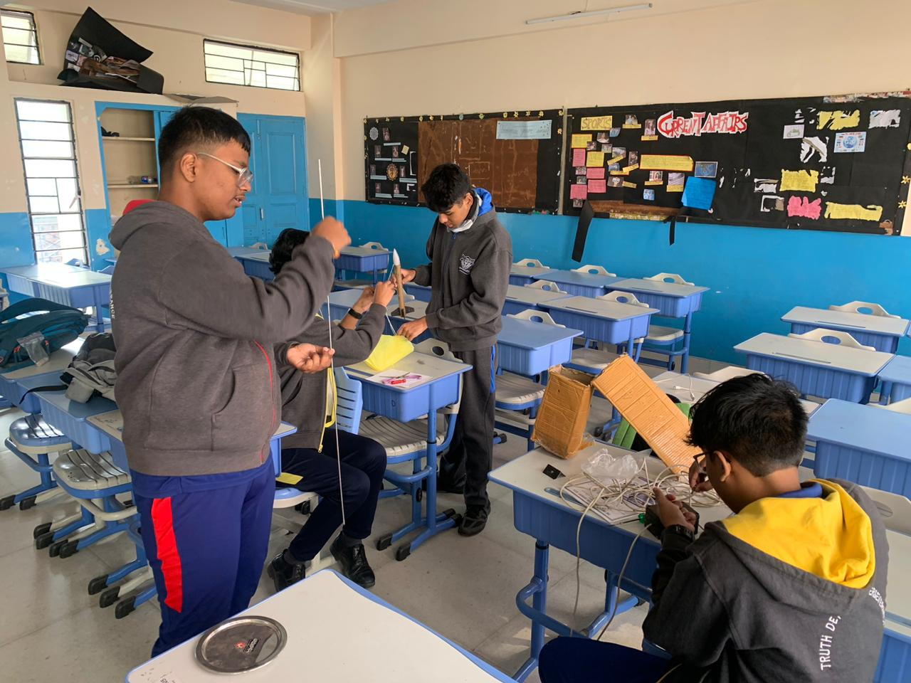
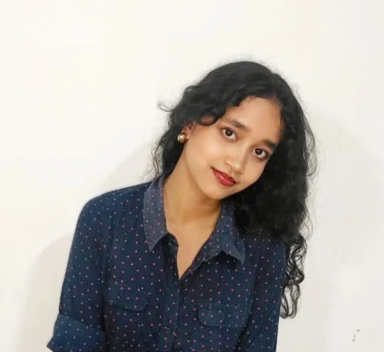
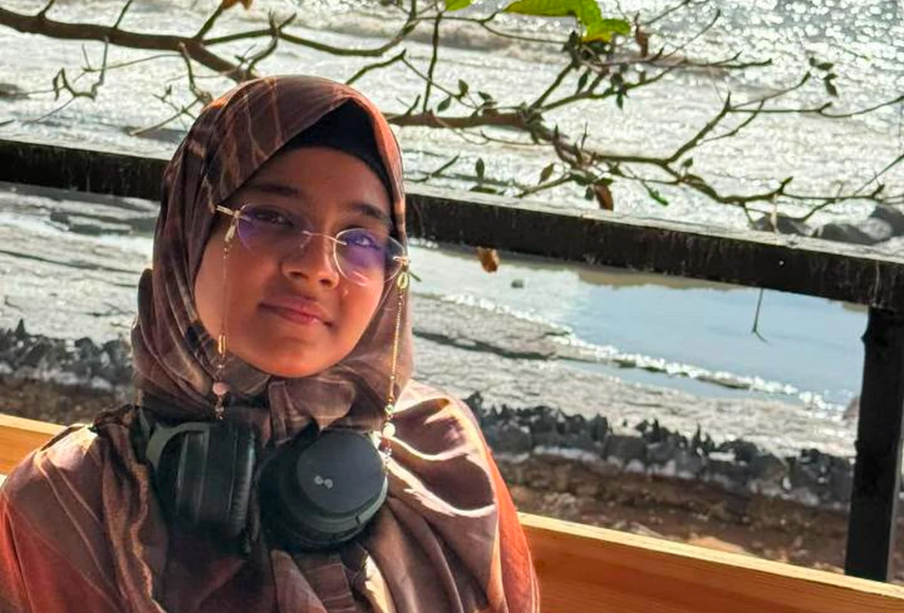
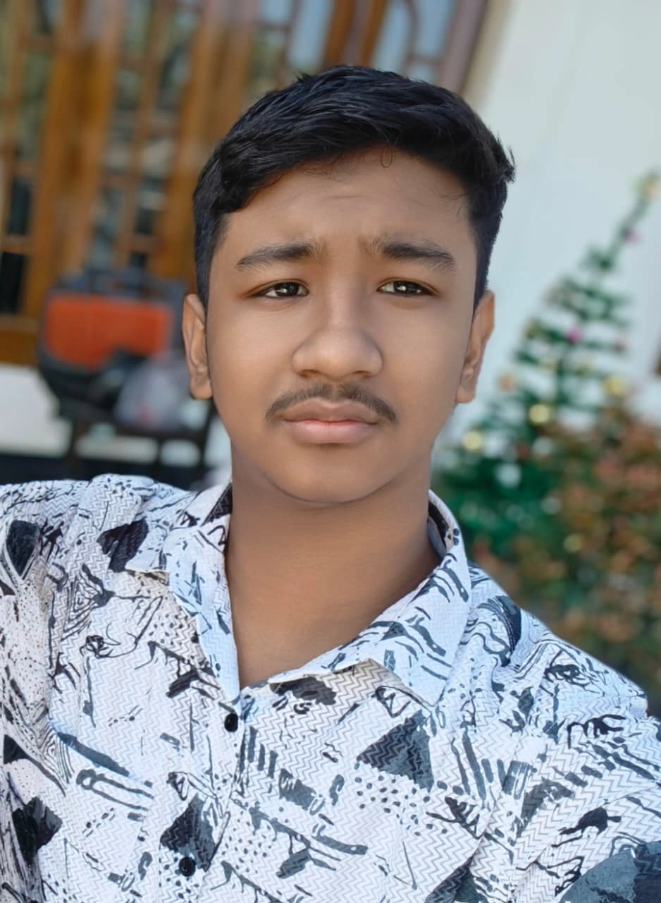
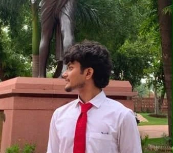
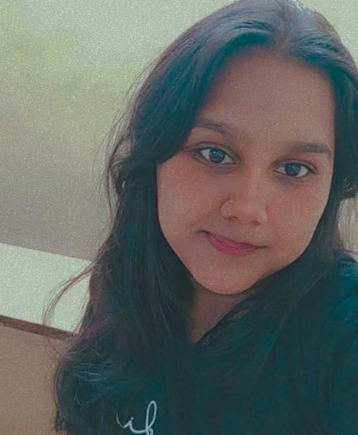

2026
Different paths. One TEL.
TEL prepares its school learning module and SafeFlight pathway, while TeMark grows its work with businesses across strategy, campaigns, social media and design. TEL Education’s public launch is still ahead.
ABOUT TEL / TECH FOR EASY LIFE
TEL is a student-led company from Guwahati. What started as a smart-home project has grown into work across learning, technology and creative business.
THE FIRST CHAPTER / 2022
TEL’s journey began with a smart-home project in 2022. It gave the team a reason to explore technology, test ideas and learn by making things.
Rocket prototypes followed. The first attempt failed; the second flew. New people, seed support and a fresh start helped turn those early efforts into the company we are building today.

THE TEL JOURNEY
TEL started with a smart-home idea. Each project, prototype and fresh start has shaped the company we are building today.
2026
TEL prepares its school learning module and SafeFlight pathway, while TeMark grows its work with businesses across strategy, campaigns, social media and design. TEL Education’s public launch is still ahead.
WHAT CONNECTS THE WORK
Make meaningful technology and thoughtful ideas easier to understand, experience and use.
TEL Education carries our practical learning and product work forward. TeMark helps businesses through strategy, campaigns, content and design. Both come from the same habit: understand the purpose, then build around it.
Leadership
TEL is founder-led by Harsh Das, with co-founder Devangi Das leading operations. Their roles combine long-term vision with day-to-day execution.
 View founder portfolio
View founder portfolio

Co-founder & Chief Operations Officer
“questioning reality is fun when its night time”
Team
Our team supports TEL across people, outreach, finance, strategy, brand and media.

Head of Human Resources & Outreach (HoHRO)
“kindness to others is great, but showing kindness to oneself is being human”

Financial Analyst
“the bridge between the first sketch and the last frame”

Strategy Analyst
“When I let go of what I am, I become what I might be.”

Director of Marketing & Brand Strategy
“A strong brand doesn't just build recognition—it builds opportunities, trust, and lasting impact.”
Visual Media Lead
“being the best at whatever i do, that's sounding on brand”
START WITH A CONVERSATION
Explore TEL Education, talk to TeMark or find your place on the team.